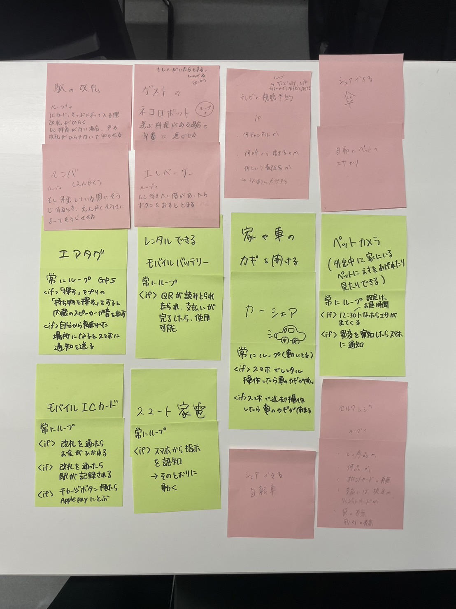

プログラムでモノを動かす
~プログラムでモノを動かしているものにはどんなものがあるか~

~プログラミング的な思考で手順を説明~
エアタグ
常にループ
if「探す」アプリの「持ち物を探す」をするとエアタグに内蔵されているスピーカーが音を出す
if 自分からエアタグが離れるとスマをに通知が送られる
カーシェアサービス
常にループ
if スマホでレンタル操作を行ったら指定の車の鍵が解錠される
if スマホで返却操作を行ったら車の鍵が施錠される
スマート家電
if スマホから家具の操作を指示したらその通りに家具が作動する
~プログラミングでどんなことができそうか~
遠隔で植物に水やりを行う
常にループ
if スマホで植物の様子を見ようとすると、カメラが起動しスマホに中継される
if 設定した時間になると自動で水やりを行う
長期の外出の際に植物の世話を欠かさず行うことができる。時間設定を行うことで世話のし忘れを防止できる。
イルミネーションを好きな色に操作できる
常にループ
if スマホで自分の好きな色を選択するとその色にライトが変化する。
色だけでなく写真をアップロードすることで、イルミネーション一面にその写真を移すことができたら面白いのではないか。
誕生日や結婚式などの演出として活用できたら良いのではないかと考えた。